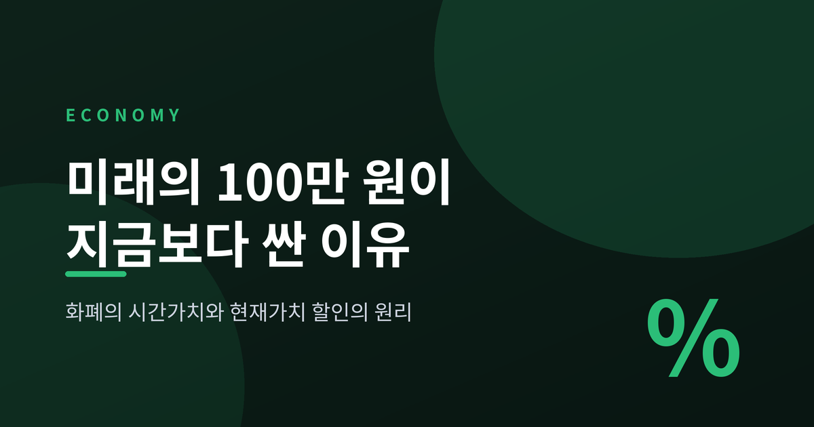
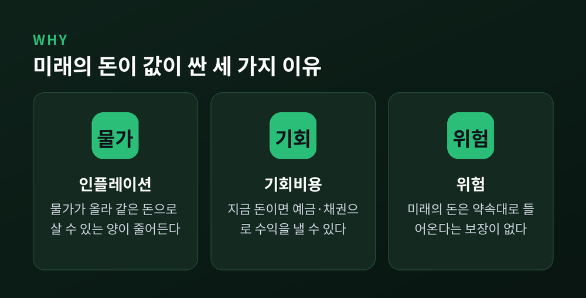
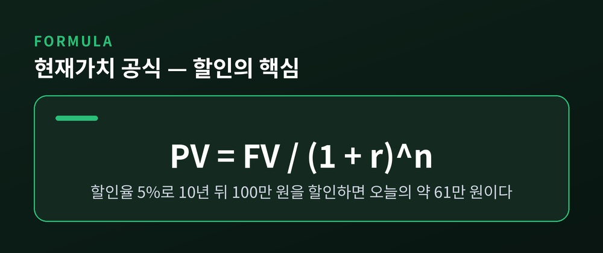
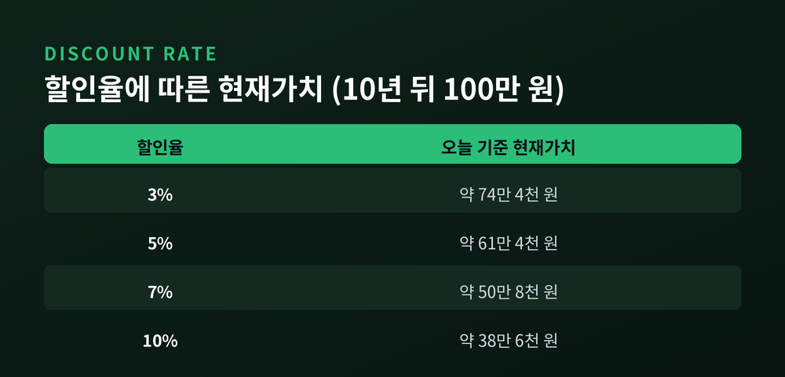
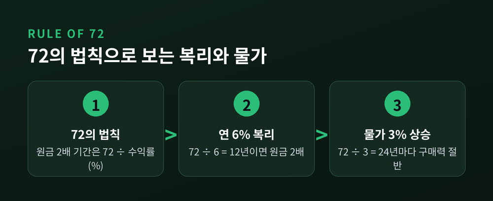
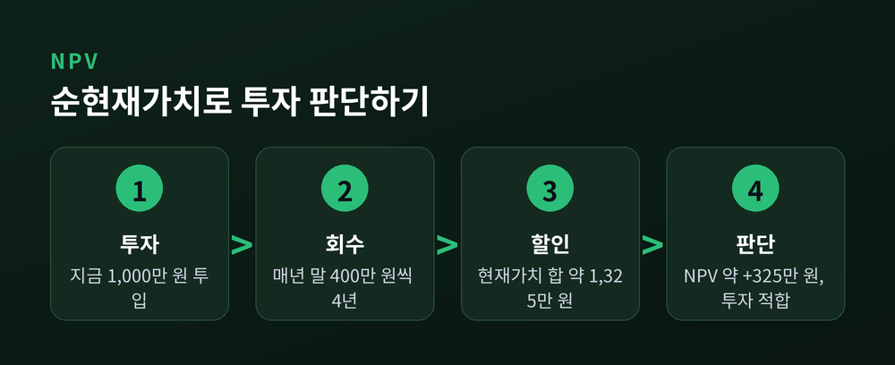

이번 글에서는 화폐의 시간가치를 정리해 보겠습니다.
"지금 100만 원을 받겠습니까, 10년 뒤 100만 원을 받겠습니까"라는 질문에 대부분 지금을 택합니다.
그 직관이 왜 옳은지, 현재가치 할인이라는 공식 하나로 풀어보려 합니다.
같은 100만 원인데도 시점이 다르면 가치가 달라집니다. 이유는 크게 세 가지입니다.
쉬운 예를 들어 보겠습니다. 물가가 매년 3%씩 오른다면, 지금 1,000원짜리 생수 한 병은 10년 뒤 약 1,344원이 됩니다. 같은 10년 동안 손에 쥔 1,000원은 그대로인데, 살 수 있는 물의 양은 줄어든 셈입니다.
정리하면 이렇습니다. 지금의 돈은 굴릴 수 있고, 미래의 돈은 물가와 불확실성에 깎입니다. 그래서 미래의 100만 원은 지금의 100만 원보다 쌉니다.
예전에는 이것을 막연히 "돈은 일찍 받는 게 낫다"고 느꼈다면, 지금은 그 느낌을 숫자로 증명할 수 있습니다.

서로 다른 시점의 돈을 비교하려면 기준 시점을 맞춰야 합니다. 미래의 돈을 오늘 기준으로 끌어내리는 계산, 이것을 할인(discounting)이라고 부릅니다.
공식은 간결합니다.
r은 할인율, n은 기간입니다. 할인율은 인플레이션과 기회비용, 위험을 한데 반영한 요구수익률로 이해하시면 됩니다.
숫자로 확인해 보겠습니다. 할인율을 연 5%로 가정합니다. 1년 뒤 100만 원의 현재가치는 100 ÷ 1.05, 즉 약 95만 2천 원입니다. 10년 뒤 100만 원이라면 100 ÷ (1.05)의 10제곱이 됩니다. (1.05)의 10제곱은 약 1.62889이므로, 현재가치는 약 61만 4천 원으로 줄어듭니다.
바꿔 말하면 이렇습니다. 오늘 61만 4천 원을 5%로 10년 굴리면 정확히 100만 원이 됩니다. 그러니 10년 뒤 100만 원과 오늘의 61만 4천 원은 같은 값입니다.
"미래의 100만 원은 사실 오늘의 61만 원짜리다." 이 한 줄이 할인의 핵심입니다.

할인율과 기간은 현재가치를 결정하는 두 손잡이입니다. 할인율이 높아질수록, 기간이 길어질수록 현재가치는 작아집니다.
10년 뒤의 100만 원을 할인율만 바꿔가며 계산해 보겠습니다.
같은 미래의 100만 원인데, 할인율을 3%로 보느냐 10%로 보느냐에 따라 오늘의 값이 두 배 가까이 벌어집니다. 위험이 큰 투자일수록 할인율을 높게 잡고, 그만큼 미래 현금흐름을 박하게 평가합니다.
기간을 늘리면 격차는 더 벌어집니다. 20년 뒤 1억 원을 5%로 할인하면 오늘 값은 약 3,769만 원에 불과합니다. 20년을 기다리는 동안 그 1억 원의 6할 넘는 가치가 시간에 녹아 사라지는 셈입니다.

할인의 반대편에는 복리가 있습니다. 현재가치가 미래의 돈을 오늘로 끌어내리는 것이라면, 미래가치는 오늘의 돈을 미래로 밀어 올리는 것입니다.
앞의 예를 뒤집으면 됩니다. 오늘 100만 원을 5%로 10년 굴리면 약 162만 9천 원이 됩니다. 원금에만 이자가 붙는 것이 아니라, 붙은 이자에 다시 이자가 붙기 때문입니다.
이 복리를 머릿속으로 어림잡는 도구가 72의 법칙입니다. 원금이 두 배가 되는 기간은 대략 72를 수익률로 나눈 값입니다. 연 6%라면 72 ÷ 6, 즉 12년이면 두 배가 됩니다. 이 어림법은 연 4~12% 구간에서 꽤 잘 맞고, 복리에만 통합니다.
방향을 뒤집으면 인플레이션에도 쓸 수 있습니다. 물가가 매년 3%씩 오르면 72 ÷ 3, 약 24년마다 물가가 두 배가 됩니다. 바꿔 말해 24년이 지나면 돈의 구매력이 절반으로 줄어드는 셈입니다.

할인은 이론이 아니라 도구입니다. 현실의 투자 결정에서 자주 쓰이는 두 가지만 짚겠습니다.
첫째, 순현재가치(NPV)입니다. 투자로 들어올 미래의 돈을 모두 현재가치로 할인해 더한 뒤, 처음 넣은 돈을 빼는 계산입니다. 예를 들어 지금 1,000만 원을 넣고 매년 말 400만 원씩 4년간 회수한다고 해보겠습니다. 할인율은 8%입니다. 명목상 회수액은 1,600만 원이지만, 각 해의 400만 원을 할인하면 370만 원, 343만 원, 318만 원, 294만 원으로 줄어듭니다. 현재가치 합은 약 1,325만 원. 여기서 1,000만 원을 빼면 순현재가치는 약 +325만 원입니다. 0보다 크니 이 투자는 기회비용 이상을 벌어준다는 뜻입니다.
둘째, 연금의 현재가치입니다. 매년 같은 금액을 여러 해 받는 현금흐름의 오늘 값을 재는 계산입니다. 예컨대 매년 5,000달러씩 5년을 6%로 할인하면, 연금현가계수 4.212를 곱해 약 21,062달러가 됩니다. 로또의 분할 지급과 일시금을 비교하거나, 국민연금과 퇴직연금의 값을 가늠할 때 바로 이 셈법이 쓰입니다. 흔히 "20년에 걸쳐 총 10억"과 "지금 6억 일시금" 중 무엇이 나은지 다투지만, 답은 감이 아니라 할인율에 달려 있습니다. 분할 지급액을 현재가치로 환산해 일시금과 나란히 놓아야 비로소 공정한 비교가 됩니다.

다만 한 가지는 솔직히 인정해야 합니다. 할인율은 정답이 정해진 값이 아닙니다. 무위험이자율로 볼 수도, 요구수익률로 볼 수도 있습니다. 그래서 같은 미래 현금흐름도 누가 어떤 할인율을 쓰느냐에 따라 오늘의 값이 달라집니다. 공식은 정확하지만, 그 안에 넣는 가정은 사람의 판단이라는 뜻입니다.
끝으로 한 마디만 더 드리겠습니다. 화폐의 시간가치는 결국 "시간이 곧 비용"이라는 사실을 숫자로 보여주는 원리입니다. 미래의 100만 원이 지금보다 싼 이유를 알고 나면, 눈앞의 선택이 조금 다르게 보입니다.
지금 받을 것인가 나중에 받을 것인가 — 그 질문 앞에서, 이제는 계산기를 한 번 두드려 보시길 권합니다.